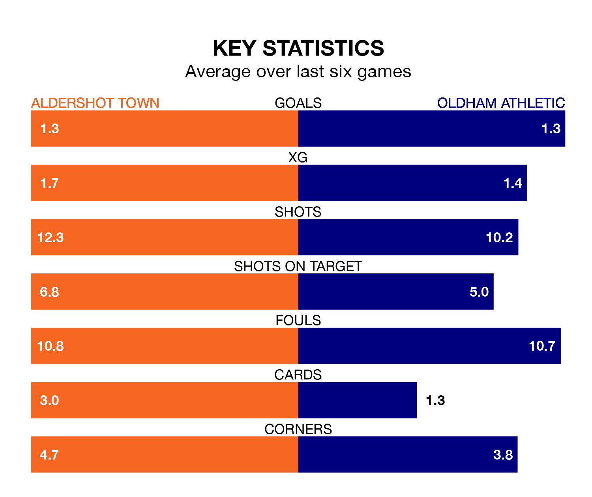

Aldershot Town host Oldham Athletic on Saturday at the Electrical Services Stadium in the National League.
In their last league match, on March 2, Aldershot beat Oxford City 2-1 away, with goals from Josh Stokes and Lorent Tolaj.
Oldham drew, 0-0 at home against Bromley on Tuesday.
With 62 goals in 36 games so far this season, Aldershot are scoring more than average in the league with 1.7 goals per game. But they are conceding more than average too, letting in 67 goals at a rate of 1.9 per game.
Oldham, meanwhile, are average scorers, with 1.5 goals per game. They have conceded 1.2 goals per game.
Athletic are fifth in the table after 37 games, of which they have won 15 and drawn 13, earning 58 points.
Town are two places behind the Latics in seventh, with 17 wins and six draws putting them on 57 points.
The Shots are in reasonable form in the National League, with four wins and two losses from their last six games.
With two wins and three draws over that period, the visitors' form is worse – they have taken nine points from 18, compared to the home team's 12.
In the last three years, Aldershot and Oldham have played each other on three occasions. Oldham won two of them and they drew once.
Their last meeting was on August 12, when Oldham won 5-1 at home.
Updated: 09:34 (UTC), 08/03/24